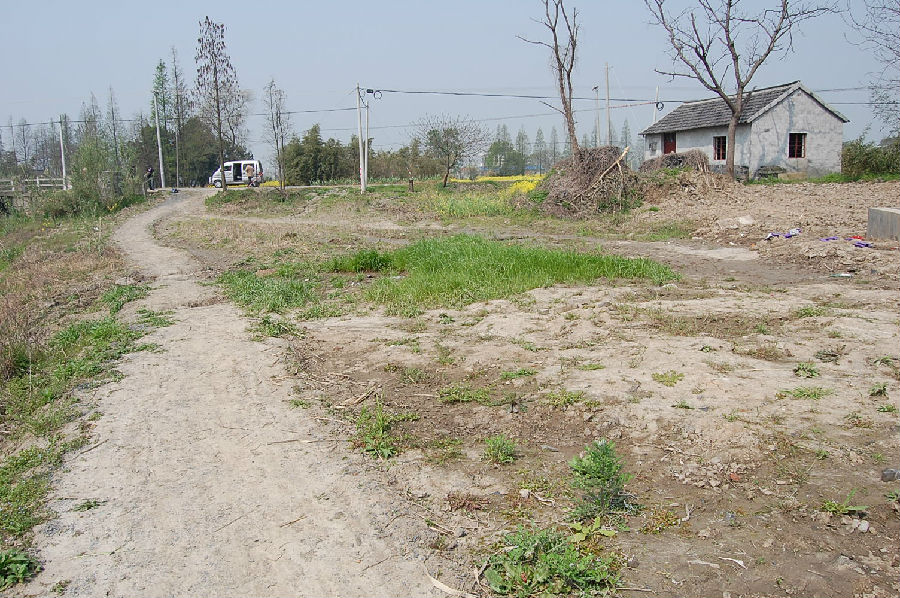

嘉兴市文物保护网 · 市级文物保护点 · 2020-11-09 · 原文

泥桥遗址位于嘉兴市南湖区新丰镇净湘村泥桥组，西边环河，东为新盐丰公路，原老盐丰公路穿过泥桥。总面积约6万平方米，文化层厚0.5至1.0米。据过去调查资料该遗址时期为春秋战国，曾出土席纹、细方格纹、半字纹等大量印纹陶片。现遗址表面以农作物，少量的民宅为主。保护牌在泥桥浜北面。泥桥遗址规模较大，延续时间长，是目前嘉兴市保存较完整的遗址之一，有较高的历史和科学价值。1992年公布为嘉兴市文物保护点。